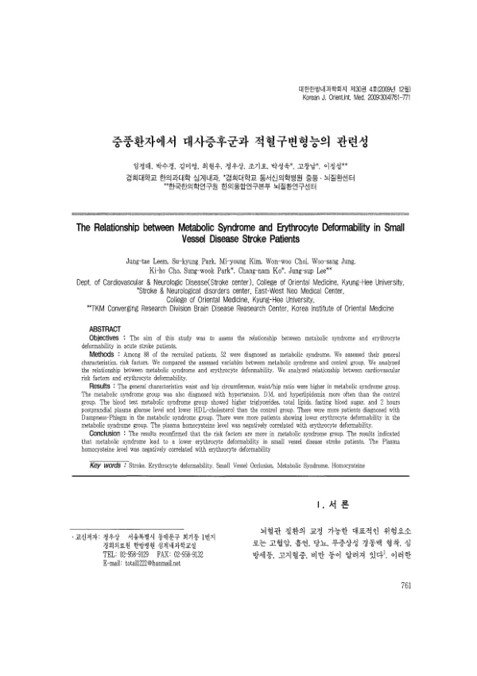

중풍환자에서 대사증후군과 적혈구변형능의 관련성
Leem Jt, Park Sk, Kim My, Choi Ww, Jung Ws, Cho Kh, Park Sw, Ko Cn, Lee Js
The Journal of Internal Korean Medicine 30(4):761-771

첫 장 · 오픈액세스First page · open access
논문 소개Summary
적혈구는 지름 6~8마이크로미터의 원반인데 3~5마이크로미터의 모세혈관을 지나야 하므로, 흐름에 맞춰 모양을 바꾸는 변형능이 필요합니다. 변형능이 떨어지면 혈액의 점도가 올라 혈류량이 줄고, 이를 보상하려 혈압이 오르면서 혈관 내피가 상해 염증이 생기며, 끝내 미세순환 장애로 이어집니다. 대사증후군은 복부비만과 이상지질대사, 혈압 상승, 인슐린 저항성을 묶은 질환군이고 우리나라 유병률은 24.8%로 보고됩니다. 비만 환자에서 대사증후군군의 변형능이 더 낮다는 보고는 있었으나, 뇌경색 가운데 소혈관폐색군을 대상으로 둘의 관계를 본 연구는 없었습니다.
모집한 88명 가운데 52명이 대사증후군으로 진단되었습니다. 두 군의 일반적 특성과 위험인자, 혈액검사 소견을 견주고, 대사증후군 여부에 따라 변형능이 다른지와 심혈관 위험인자·변형능의 상관을 함께 보았습니다.
대사증후군군은 허리둘레와 엉덩이둘레, 허리엉덩이둘레비가 컸고 고혈압과 당뇨, 고지혈증 진단이 더 많았습니다. 혈액검사에서는 중성지방과 총지질, 공복혈당, 식후 2시간 혈당이 높고 HDL 콜레스테롤이 낮았습니다. 변증에서는 습담군이 유의하게 많았고, 기혈수 변증군의 분포와는 유의한 관계가 없었습니다. 적혈구변형능이 저하된 환자는 대사증후군군에 유의하게 많았습니다. 심혈관 인자 가운데에서는 혈장 호모시스테인이 높을수록 변형능이 유의하게 낮아졌고, 다른 인자와는 상관이 없었습니다.
저자들은 이 결과를 인슐린 저항성으로 풀었습니다. 인슐린은 적혈구 표면의 수용체에 결합해 점도를 바꾸며, 인슐린 저항성과 고인슐린혈증이 혈액의 응집능을 높이고 변형능을 떨어뜨린다는 보고가 있습니다. 대사증후군의 핵심 병리가 인슐린 저항성이므로 변형능 저하가 여기서 설명된다는 것입니다. 호모시스테인 역시 큰 혈관보다 관통성 소혈관에 작용해 미세혈관병증을 일으키는 것으로 알려져 있어, 소혈관폐색군에서 호모시스테인 증가와 변형능 저하가 인슐린 저항성이라는 공통 병리로 묶인다고 보았습니다.
한계도 분명히 적혀 있습니다. 단면 연구라 인과를 확정할 수 없고, 대상을 뇌경색 가운데 소혈관폐색군으로 한정했기 때문에 뇌경색 환자 전체에 적용해 일반화하지 못했습니다. 인슐린 저항성을 함께 재지 않은 것도 한계여서, 앞으로 인슐린 저항성과 적혈구변형능, 호모시스테인을 한자리에서 재는 연구가 필요하다고 제안했습니다. 그럼에도 국내에서 처음으로 소혈관폐색 뇌경색 환자에서 이 관계를 보인 연구입니다.
A red blood cell is a disc six to eight micrometres across, yet it must pass through capillaries only three to five micrometres wide. It therefore needs deformability — the ability to reshape itself to the flow. When deformability falls, blood viscosity rises and flow drops; the body raises blood pressure to compensate, the endothelium is injured under that pressure and inflames, and the end result is microcirculatory failure and tissue hypoxia. Metabolic syndrome bundles abdominal obesity, dyslipidaemia, raised blood pressure and insulin resistance, with a Korean prevalence reported at 24.8%. Lower deformability in patients with metabolic syndrome had been reported among the obese, but no study had asked the question in the small-vessel occlusion subtype of cerebral infarction.
Of 88 recruited patients, 52 were diagnosed with metabolic syndrome. General characteristics, risk factors and blood tests were compared between the two groups, together with whether erythrocyte deformability differed by metabolic syndrome status and whether cardiovascular risk factors correlated with deformability.
The metabolic syndrome group had larger waist and hip circumference and waist–hip ratio, and carried more diagnoses of hypertension, diabetes and hyperlipidaemia. On blood testing they showed higher triglycerides, total lipids, fasting glucose and two-hour postprandial glucose, with lower HDL cholesterol. Among patterns, dampness-phlegm was significantly more common, while the distribution of qi–blood–fluid patterns showed no significant relation. Patients with reduced erythrocyte deformability were significantly more numerous in the metabolic syndrome group. Of the cardiovascular factors, only plasma homocysteine mattered: the higher it ran, the significantly lower the deformability.
The authors read the finding through insulin resistance. Insulin binds receptors on the red cell surface and alters its viscosity, and insulin resistance with hyperinsulinaemia has been reported to raise aggregability and lower deformability. Since insulin resistance is the core pathology of metabolic syndrome, the fall in deformability follows from it. Homocysteine, too, is understood to act on penetrating small vessels rather than large ones, driving smooth muscle proliferation and microangiopathy. Raised homocysteine and reduced deformability in small-vessel occlusion can thus be tied to a shared pathology, insulin resistance, and a shared pathological state, microangiopathy.
The limitations are stated plainly. Being cross-sectional, the study cannot fix causation between the two factors, and confining the subjects to small-vessel occlusion means the result cannot be generalised to all patients with cerebral infarction. Not measuring insulin resistance alongside was a further limitation, and the authors call for a study measuring insulin resistance, deformability and homocysteine together. Even so, this is the first Korean study to show the relationship in small-vessel occlusion stroke.
인용Cite
Leem Jt, Park Sk, Kim My, Choi Ww, Jung Ws, Cho Kh, Park Sw, Ko Cn, Lee Js. 중풍환자에서 대사증후군과 적혈구변형능의 관련성. The Journal of Internal Korean Medicine. 2009;30(4):761-771.